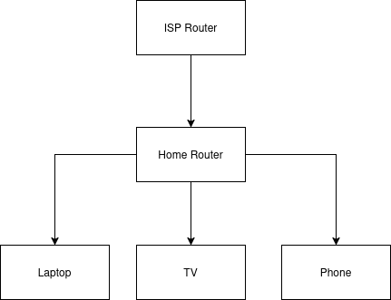
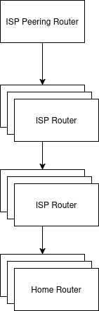
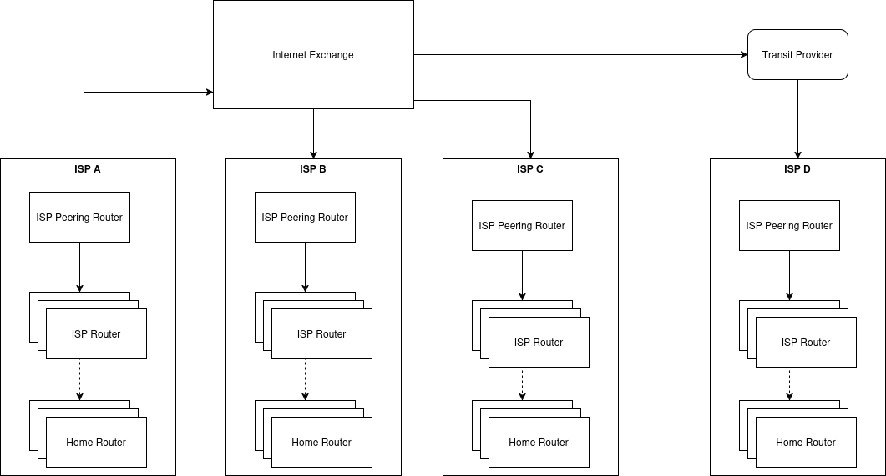

Inter-Networking: For Fun and for Profit¶
A journey into the heart of the internet
The "Internet" - What's in a name?¶
- The word "Internet" comes from the idea of a network of networks.
- It's a global system of interconnected computer networks.
A Brief History¶
- The internet's origins trace back to the Cold War.
- ARPANET, developed in the late 1960s, was the precursor to the internet.
- The invention of TCP/IP in 1974 was a crucial development that allowed different networks to communicate.
- The World Wide Web, invented by Tim Berners-Lee in 1989, made the internet accessible to the public.
What is Inter-Networking?¶
- The practice of connecting a computer network with other computer networks.
- This is done using gateways that provide a common method of routing information packets between the networks.
- The resulting system of interconnected networks is called an internetwork, or simply an internet.
A Mental Model: The Internet as a Forest of Trees¶
- We can think of the internet as a vast forest of interconnected trees.
- Each "network" is a tree.
- Let's explore the parts of this "tree".
The "Tree" Analogy¶
- Leaves: Your devices (laptops, phones, etc.)
- Branches: The connections from your devices.
- Trunk: The main connection point, often a router or a NAT device.
- Roots: The connection to the wider internet.
Tree Analogy: Diagram¶

Routers vs. Switches¶
- Switches connect devices within the same network. They primarily operate at Layer 2 (Data Link Layer). They use MAC addresses to forward data to the correct device.
- Routers connect different networks. They primarily operate at Layer 3 (Network Layer). They use IP addresses to forward data between networks.
- In our tree analogy, switches are like the smaller branches connecting leaves, while routers are the larger branches connecting different trees.
The "Root" of the Tree: The NAT Device¶
- NAT stands for Network Address Translation.
- It's the gateway from your local network to the internet.
- It translates the private IP addresses of your devices to a single public IP address.
- This is why you can have many devices on your home network, but only one public IP address.
- While NAT provides a basic level of security by hiding internal IP addresses, it is not a substitute for a firewall.
A Recursive Forest¶
- The tree analogy can be recursive.
- Your home network is a small tree.
- Your ISP (Internet Service Provider) is a larger tree, with your home network as one of its leaves.
- This can go on for several layers, especially with local telecom operators.
ISP Network with Double NAT¶

Interconnected ISPs¶
In this diagram, the network that belongs to each ISP shares the same IP-prefix. We will look at this in the coming slides.

The Edge of the Forest: Edge Routers¶
- The top-most nodes in this hierarchy are the edge routers.
- These are powerful routers that connect different networks (different "trees").
- They are the gatekeepers of their respective networks.
How do Routers know where to send data?¶
- So, you want to visit a website. Your request goes up your "tree" to the edge router.
- How does that edge router know which other "tree" (network) the website is on?
- It needs a map.
The Map of the Internet: Autonomous Systems (AS)¶
- The internet is divided into "Autonomous Systems" (AS).
- An AS is a large network or group of networks that has a single, unified routing policy.
- Each AS is assigned a unique number (ASN).
- Think of an AS as a large "region" of the internet.
What is CIDR? (Classless Inter-Domain Routing)¶
- CIDR is a method for allocating IP addresses and IP routing.
- It replaced the older classful network addressing system.
- Why it matters: It significantly improved IP address allocation efficiency and reduced the size of routing tables.
- How it works: It uses a "slash notation" (
/xx) to indicate the network portion of an IP address. The number after the slash specifies how many bits are in the network prefix. - Example:
192.168.1.0/24means the first 24 bits define the network, and the remaining 8 bits are for host addresses within that network.
CIDR and Autonomous Systems¶
- ASes don't advertise individual IP addresses, but rather blocks of IP addresses.
- These blocks are defined using CIDR prefixes.
- An AS announces to the internet that it is the origin for specific CIDR blocks.
- Example: AS100 might announce that it "owns" the IP range
1.1.1.0/24,1.1.2.0/24, and so on. - BGP routers use these CIDR prefixes to build their global routing tables, directing traffic to the correct AS that hosts those IP addresses.
The Global Postal Service of the Internet: BGP¶
- BGP stands for Border Gateway Protocol.
- It's the protocol that edge routers use to talk to each other.
- They exchange information about which IP addresses belong to which AS.
- It's like a global postal service that directs internet traffic.
How BGP Works: Peering¶
- BGP routers at the edge of an AS are called "BGP peers" or "BGP speakers".
- They connect to peers in other ASes to exchange routing information.
- This connection is called "peering".
Information needed to peer¶
AS-number
IP of edge router
IP Prefix
With these 3 information (primarily) you can announce to the world which part of the internet can be reached through you.
How BGP Works: Route Advertisement¶
- Once peered, routers advertise the networks they can reach.
- These advertisements include the "AS path" - the sequence of ASes the route has traversed.
- Routers use this information to build a table of all possible paths.
How BGP Works: Path Selection¶
- BGP uses a set of attributes to select the "best" path to a destination.
- The most important attribute is the AS path length - shorter paths are preferred.
- Other attributes like "local preference" and "MED" (Multi-Exit Discriminator) allow for more granular control over path selection.
Receiving BGP Routes: The BGP Table (RIB)¶
- Each BGP router maintains a BGP Table (also known as a Routing Information Base or RIB).
- This table stores all routes learned from all BGP neighbors, along with all their attributes (AS_PATH, NEXT_HOP, etc.).
- A router can have multiple paths to the same destination stored in its BGP table.
The BGP Best Path Selection Algorithm¶
- After receiving routes, the router runs a best path selection algorithm to choose the single best path for each destination.
- This algorithm evaluates path attributes in a specific order, such as:
- Highest Local_Preference.
- Shortest AS_PATH.
- Lowest MED (Multi-Exit Discriminator).
The IP Routing Table (FIB)¶
- Only the single best path for each destination is installed into the router's main IP Routing Table (also known as the Forwarding Information Base or FIB).
- This is the table the router uses to actually forward data packets.
- Other paths remain in the BGP table as backups.
BGP Show Path Command¶
- The
show ip bgp pathscommand on a router displays the BGP paths it has learned. - Example output:
Router# show ip bgp paths Hash Refcount Metric Path 2 7 - i 1 1 - i 3 1 - 871 i - The
Pathcolumn shows the AS path. In the last line, the path is through AS 871. - The
iat the end means the route originated from an IGP (Interior Gateway Protocol).
Summary¶
- The internet is a network of networks.
- We can think of it as a forest of interconnected trees.
- NAT devices are the roots of our local trees.
- Edge routers are the gateways between networks.
- ASes are the large regions of the internet.
- BGP is the protocol that directs traffic between ASes.
Thank you!¶
Questions?